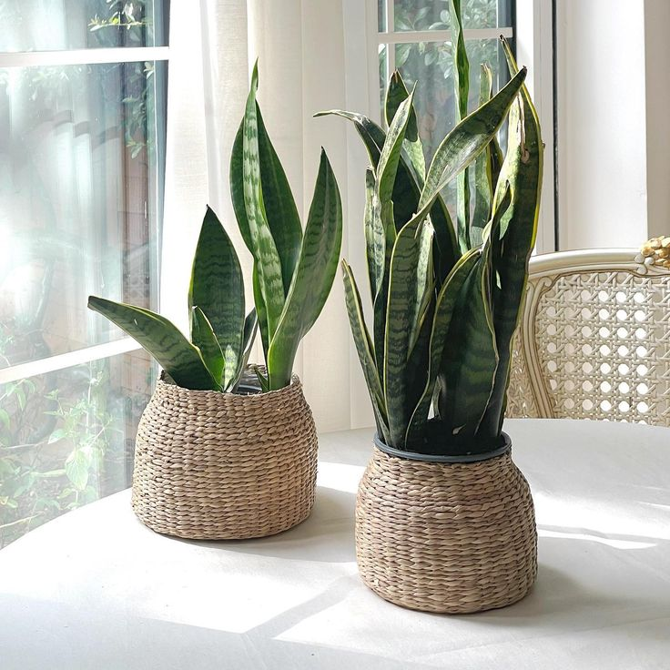
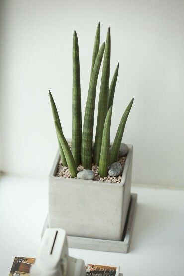
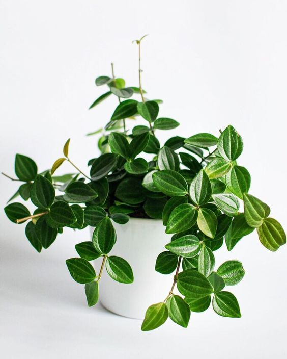
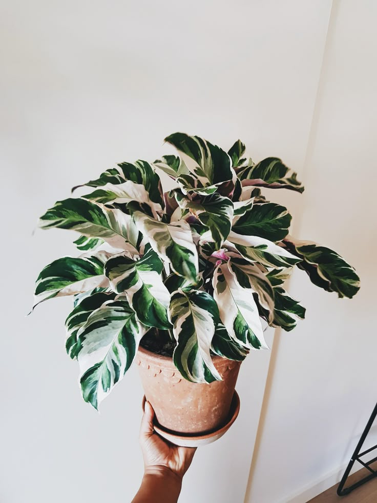
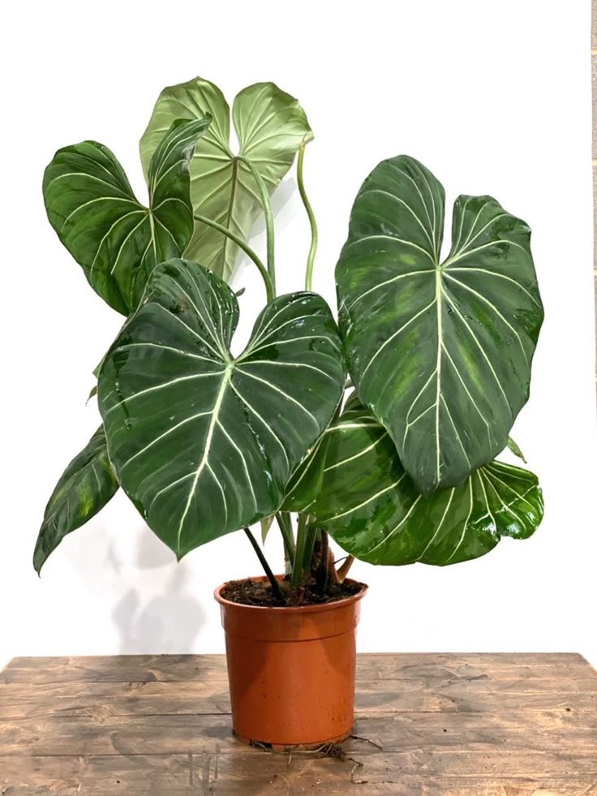

🪴 식물 도감

몬스테라(Monstera)
온도와 습도가 중요한 식물입니다. 커다란 잎에 구멍이 뚫린 듯한
독특한 모양으로 많은 사랑을 받고 있습니다.

산세베리아(Sansevieria)
공기정화 능력이 뛰어나고, 습도와 환경 변화에 강하여 초보자들이 키우기 좋은 식물입니다.

스투키(Stuckyi)
기둥형 잎이 매력적인 다육식물로, 공기정화 능력도 좋습니다.
관리가 비교적 쉬워 초보자들에게 인기가 많습니다.

페페로미아(Peperomia)
후추과에 속하는 다육질 식물이며, 종류가 매우 많습니다.
작은 화분에서도 잘자라는 특성이 있으며 두꺼운 잎이 특징입니다.

칼라데아(Calathea)
종류가 많으며, 독특한 잎의 색상과 무늬로 실내 관엽식물로 인기가 많습니다.
밝은 간접광을 좋아하는 특성이 있습니다.

필로덴드론(Philodendron)
덩굴형, 직립형, 나무형의 세가지 유형이 있습니다.
다른 식물에 비해 크게 자라며, 추위에 약합니다.